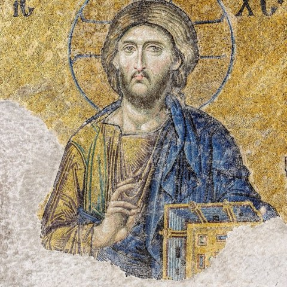

Today’s Reading, Today’s Homily
From the Library
The Letters Sent
A book still being made, one letter at a time.
St Tikhon of Zadonsk
First English Translation
St Tikhon’s letters to the household of a Russian nobleman, rendered into English for the first time — counsel on prayer, patience, and the examined life, one letter at a sitting.
Continue readingBrowse the Shelves
The Church Year
Homilies for the feasts, kept in their season — the Afterfeast of the Transfiguration this week, the Dormition ahead.
Browse the Shelves
Spiritual Topics
Beyond the calendar — on prayer, on trial, on the wisdom of God, theme by theme.
Browse the Shelves
Lives of the Saints
Long lives, read a chapter at a time. Now serialising: St Andrew the Fool.

0 homilies, ready to print
Collect the homilies you return to, and print them as a booklet — a cover, a contents page, and the texts you’ve chosen, ready to hold.